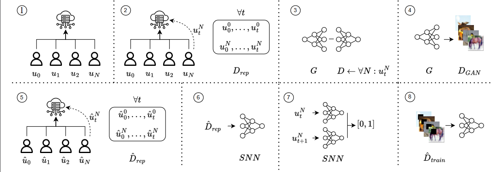

The overview of the attack: in 1) and 2), the FL is trained, and the attacker keeps a collection of submitted models. The attacker generated fake image samples in 3) and 4). In 5), the attacker trains a shadow network. In 6) and 7), the attacker identifies the victim using an SNN. Lastly, in 8), the attacker injects the backdoor on the victim's model.
Federated Learning (FL) enables collaborative training of Deep Learning (DL) models where the data is retained locally. Like DL, FL has severe security weaknesses that the attackers can exploit, e.g., model inversion and backdoor attacks. Model inversion attacks reconstruct the data from the training datasets, whereas backdoors misclassify only classes containing specific properties, e.g., a pixel pattern. Backdoors are prominent in FL and aim to poison every client model, while model inversion attacks can target even a single client.
This paper introduces a novel technique to allow backdoor attacks to be client-targeted, compromising a single client while the rest remain unchanged. The attack takes advantage of state-of-the-art model inversion and backdoor attacks. Precisely, we leverage a Generative Adversarial Network to perform the model inversion. Afterward, we shadow-train the FL network, in which, using a Siamese Neural Network, we can identify, target, and backdoor the victim's model. Our attack has been validated using the MNIST, F-MNIST, EMNIST, and CIFAR-100 datasets under different settings---achieving up to 99% accuracy on both source (clean) and target (backdoor) classes and against state-of-the-art defenses, e.g., Neural Cleanse, opening a novel threat model to be considered in the future.